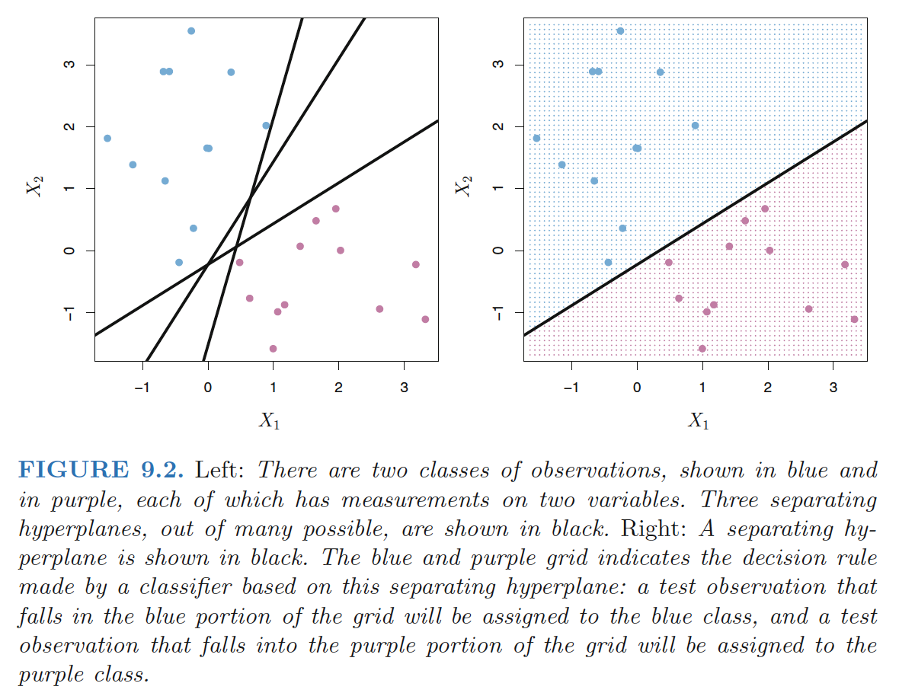
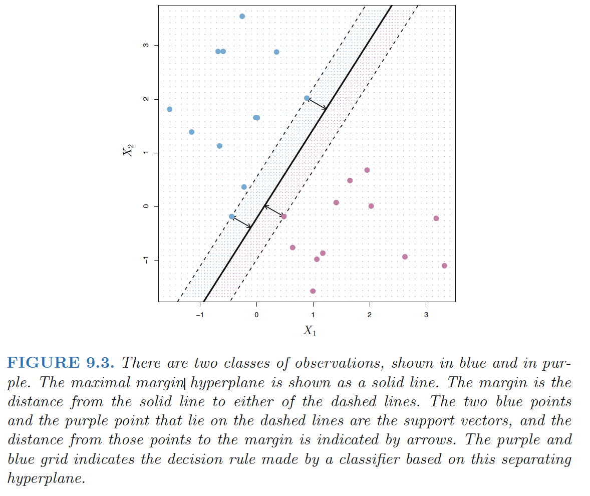

What Is a Hyperplane?
Hyperplane : In a p-dimensional space, a hyperplane is a flat affine subspace of dimension \(p − 1\).
- e.g. in two dimensions, a hyperplane is a flat one-dimensional subspace—in other words, a line.
Mathematical definition of a hyperplane: \[ \beta_0+\beta_1X_1+\beta_2X_2,...+\beta_pX_p=0, \quad (9.1) \]
- Any \(X = (X1,X2,…X_p)^T\) for which (9.1) holds is a point on the hyperplane.
Classification Using a Separating Hyperplane
Setting:
- \(n \times p\) data matrix \(X\) that consists of \(n\) training observations in p-dimensional space
- These observations fall into two classes—that is, $y_1, . . . , y_n {−1, 1} $.
- Test observation: a p-vector of observed features \(x^∗ =\{x^∗_1 . . . x^∗_p\}^T\).
Separating hyperplane has the property that: \[ y_i(\beta_0+\beta_1x_{i1}+\beta_2x_{i2},...+\beta_px_{ip})>0, \quad (9.8) \]
- for all i=1,…,n
We classify the test observation \(x^*\) based on the sign of \(f(x^∗) = \beta_0+\beta_1x_{1}^*+\beta_2x_{2}^*,...+\beta_px_{p}^*\).
- If \(f(x^∗)\) is positive, then we assign the test observation to class 1, and if f(x∗) is negative, then we assign it to class −1.
- Magnitude of \(f(x^∗)\). If \(f(x^∗)\)is far from zero, then this means that \(x^∗\) lies far from the hyperplane,and so we can be confident about our class assignment for \(x^∗\).

The Maximal Margin Classifier
Margin: the smallest (perpendicular) distance from each training observation to a given separating hyperplane \(\Rightarrow\) the minimal distance from the observations to the hyperplane.
Maximal margin hyperplane: the separating hyperplane that is farthest from the training observations.
- The maximal margin hyperplane is the separating hyperplane for which the margin is largest
- Overfitting when \(p\) is large.
Maximal margin classifier: classify a test observation based on which side of the maximal margin hyperplane it lies.
Support vectors: training observations that are equidistant from the maximal margin hyperplane that indicate the width of the margin.
- They “support” the maximal margin hyperplane in the sense vector that if these points were moved slightly then the maximal margin hyperplanewould move as well.
- The maximal margin hyperplane depends directly on the support vectors, but not on the other observations

Construction of the Maximal Margin Classifier
The maximal margin hyperplane is the solution to the optimization problem \[ \max_{\beta_0,...\beta_p} M \\ s.t. \sum_{j=1}^p \beta_j^2=1, \quad (9.10) \\ y_i(\beta_0+\beta_1x_{i1}+\beta_2x_{i2},...+\beta_px_{ip})>M \quad \forall i=1,..,n. \quad (9.11) \]
- The constraint in (9.11) in fact requires that each observation be on the correct side of the hyperplane, with some cushion, provided that margin \(M\) is positive.)
- The constraint in (9.10) makes sure the perpendicular distance from the i-th observation to the hyperplane is given by
\[ y_i(\beta_0+\beta_1x_{i1}+\beta_2x_{i2},...+\beta_px_{ip}) \]